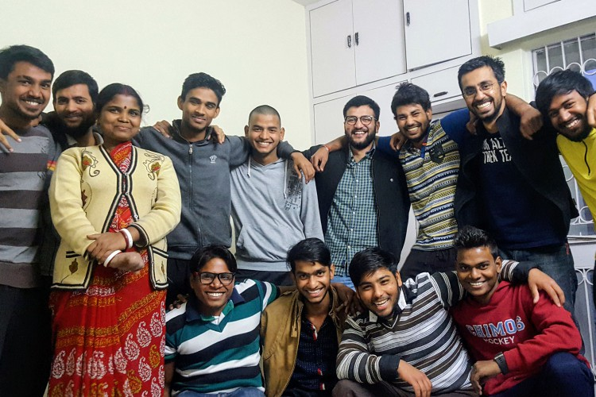
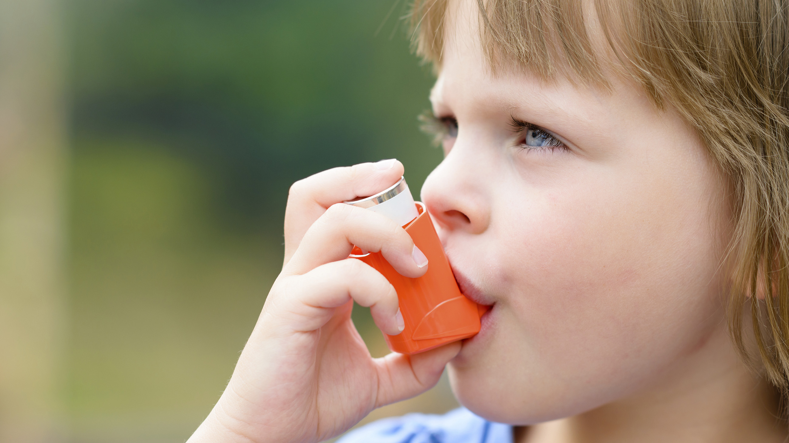

Day After Diwali, Delhi Chokes On More Polluted Air
\Diwali 2017: How to protect yourself from air pollution this Deepawali
Hello I’m Aslam, NavGurukul’s Student a software Developer, We all know the precautions one must take while dealing with fire on Diwali, but the harm caused by smoke and fumes also needs to be taken care of. Here are a few tips.
Diwali, the festival of lights is a joyous occasion full of merriment, gaiety, zest and zeal. From attending traditional parties to shopping for new clothes and preparing delicious meals — the five-day festival is believed to bring in good luck! To jazz up the ritual of lighting lamps and tying strings of light bulbs, people also burst crackers. However, little do they realise that they tend to add pollutants to the environment. After the extensive use of harmful firecrackers or non-biodegradable items such as plastic decoration items and thermocol plates — every year, after the merriment comes to a halt, most cities have a cover of smog for a couple of days.
In several areas, especially the National Capital, firecrackers have been banned for some time to control the pollution levels. Nevertheless, we must take care of the health of not just our near and dear ones — but all the citizens of the country. We all know the precautions one must take while dealing with fire, but the harm caused by smoke and fumes also needs to be taken care of. Here are a few tips shared by experts that can help us deal with air pollution, especially for patients with asthma, kids, and elderly people.
Things to keep in mind before Diwali:
* Boost immunity: Guys We should make our environment good, We have to plant a plant everywhere, We must try that the pollution should be minimized.
For patients with asthma: And this is most important to your family, Keep your inhalers handy and stock up your refills and check the expiry date of the inhaler. Also, buy your medication beforehand as most shops are closed during the festival.
Things to keep in mind during Diwali:
For shortness of breath or choking: Do not panic. Go to an area where there are fewer fumes and then take deep breaths. Wear a wet cloth as a mask to avoid breathing in bad air. In case it continues, see a doctor.
* Tips for kids and newborns: Children shouldn’t be left alone on their own. Take care that the crackers do not produce too many fumes as it is extremely injurious to health. “Keep newborns indoors and keep the window panes shut so that harmful air doesn’t enter the house. Use a wet cloth as a mask to avoid breathing in polluted air, ” Dr Rajesh Chawla, senior consultant for respiratory medicine from Indraprastha Apollo Hospitals says.
* Tips for elderly people: Similar care should be taken for old people. In case, they participate in burning firecrackers, make sure they wear a safety mask. Also, never try to touch half burned crackers. Remain as far as possible from the smoke of the crackers.